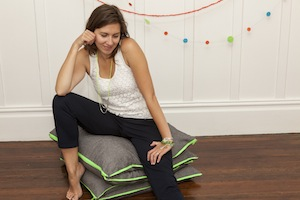

|  |
I have a really small and cute balcony and I wanted to find out something cool and easy to install to put on it, so that my little family could relax and enjoy this extra space. So I put a couple of yoga mats where we could sit and created two huge pillows for supporting our backs. My little toddler loved them on first sight but never used them as I expected. He was always happily sitting in the middle of the pillows… And here came the idea of the Zipillow couch! Now my baby boy is running to the couch! It’s so cute to see him comfortably curling up on it. My family and friends thought it was an excellent idea, that’s how I decided to undertake this exciting challenge by launching Zipillow. |
|
I was born and raised in “fabric land”. At home my mother had her creation of women's intimate studio. Driven by a scientific soul I moved to Paris for 10 years where I became a project management engineer. In 2010 I left my job and France for San Francisco and really enjoyed spending time as a stay-at-home mother in this beautiful and very inspiring city. But something was missing… and I really wanted to create something with my hands. That’s when “fabric land” came back in my life! |
|
All my products are proudly handmade and all couches are made to order. So yes: it’s absolutely normal to notice tiny irregularities! But be ensured that I put my heart in my work and you’ll hardly even notice them. You can personalize your couch by choosing your fabric and the color of the zippers. I need approximately 7 days to make and ship your couch. I ship only in the US for now. Of course if you really really want it and you need an international shipping, please contact me. My goal is to create experiences that enchant my customers. If you have any questions please send me a message and I'll be happy to help. I’m very curious about discovering how you use your Zipillow couch. Which position you like best, where do you use it, who in the family is an addict… Please share your experience and be kind enough to send me a picture! |
|
We are happy to build a partnership with Global Soap Project. This creative not-for-organization works to improve global health by recycling used hotel soap and turning it into new bars. They are distributed to vulnerable populations around the world. For each product you purchase from us, you help Global Soap Project. More information on www.globalsoap.org. |
Big thanks to: |